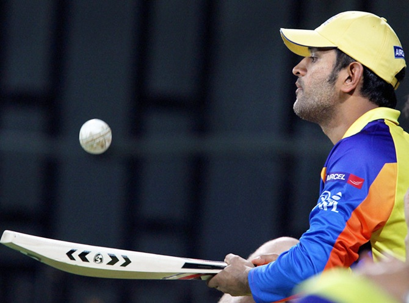
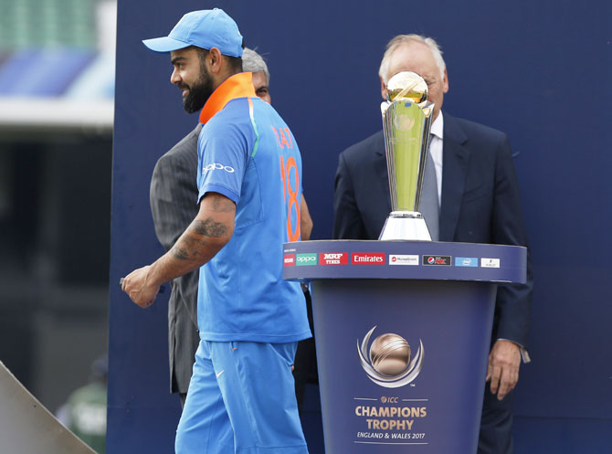
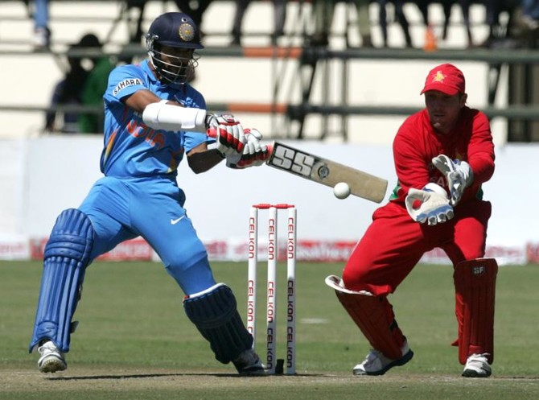
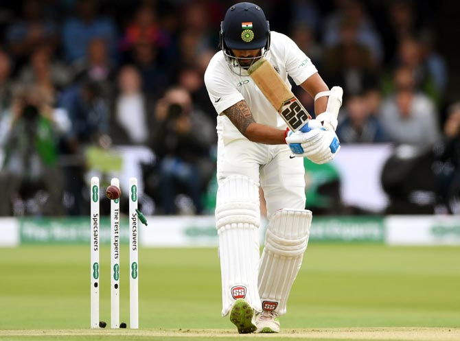
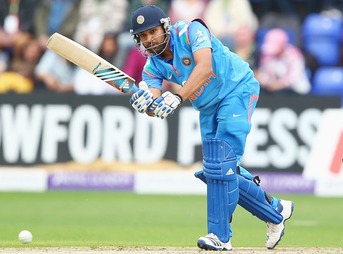
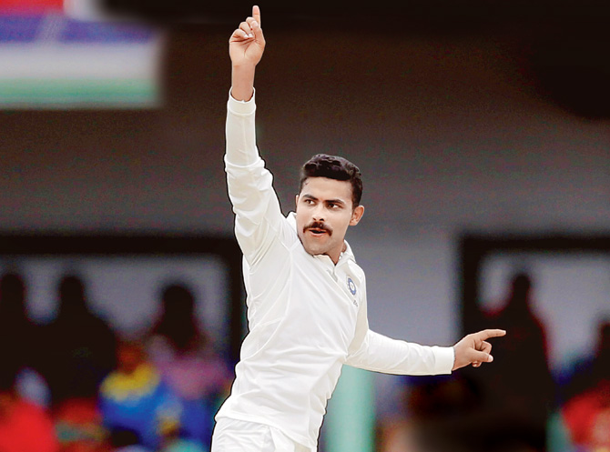
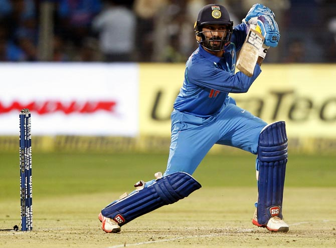
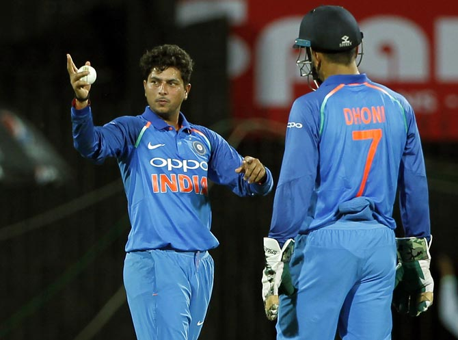
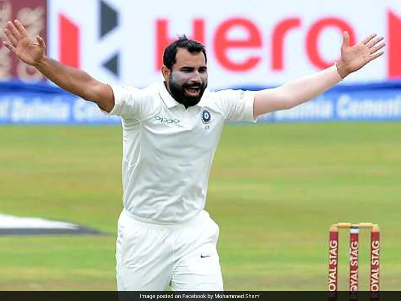

Ms. Dhoni

Dhoni was born in Ranchi, Bihar (now in Jharkhand), and he identifies as a Hindu Rajput.His paternal village Lvali is in the Lamgarha block of the Almora District of Uttarakhand. Dhoni's parents moved from Uttarakhand to Ranchi, where his father Pan Singh worked in junior management positions in MECON. Dhoni has a sister Jayanti Gupta and a brother Narendra Singh Dhoni. Dhoni is a fan of Adam Gilchrist, and his childhood idols were cricket teammate Sachin Tendulkar, Bollywood actor Amitabh Bachchan and singer Lata Mangeshkar
Dhoni studied at DAV Jawahar Vidya Mandir, Shyamali, Ranchi, Jharkhand where he initially excelled in badminton and football and was selected at district and club level in these sports. Dhoni was a goalkeeper for his football team and was sent to play cricket for a local cricket club by his football coach. Though he had not played cricket, Dhoni impressed with his wicket-keeping skills and became the regular wicketkeeper at the Commando cricket club (1995–1998). Based on his performance at club cricket, he was picked for the 1997/98 season Vinoo Mankad Trophy Under-16 Championship and he performed well.[19] Dhoni focused on cricket after his 10th standard.[22] Dhoni was a Travelling Ticket Examiner (TTE) at Kharagpur railway station from 2001 to 2003, under South Eastern Railway in Midnapore (W), a district in West Bengal.His colleagues remember him as a very honest, straightforward employee of the Indian Railways. But he also had a mischievous side to his personality. Once, while staying at the railway quarters, Dhoni and a couple of his friends covered themselves in white bedsheets and walked around in the complex late in the night. The night guards were fooled into believing that there were ghosts moving around in the complex. The story made big news on the next day.
Rohit Sharma

Sharma was born on 30 April 1987 in Bansod, Nagpur, Maharashtra. His mother Purnima Sharma comes from Visakhapatnam.[6] His father Gurunath Sharma worked as a caretaker of a transport firm storehouse. Sharma was raised by his grandparents and uncles in Borivali because of his father's low income.[7] He would visit his parents, who lived in a single-room house in Dombivli,[8] only during weekends.[7] He has an elder brother, Vishal Sharma.
Sharma joined a cricket camp in 1999 with his uncle's money. His coach at the camp was Dinesh Lad who asked him to change his school to Swami Vivekanand International School, where Lad was the coach and which had better cricket facilities. Sharma recollects, "I told him I couldn't afford it, but he got me a scholarship. So for four years I didn't pay a penny, and did well in my cricket."[7] Sharma started as an off-spinner who could bat a bit before Lad noticed Sharma's batting abilities and promoted him from number eight to open the innings. He excelled in the Harris and Giles Shield school cricket tournaments, scoring a century on debut as an opener.
Virat Kohli

Virat Kohli was born on 5 November 1988 in Delhi into a Punjabi family.[17] His father, Prem Kohli, worked as a criminal lawyer and his mother, Saroj Kohli, is a housewife.[18] He has an older brother, Vikash, and an older sister, Bhavna.[19] According to his family, when he was three-years old, Kohli would pick up a cricket bat, start swinging it and ask his father to bowl at him.
Kohli was raised in Uttam Nagar[21] and started his schooling at Vishal Bharti Public School. In 1998, the West Delhi Cricket Academy was created, and Kohli, a nine-year-old, was part of its first intake.[21] Kohli's father took him to the academy after their neighbours suggested that "Virat shouldn't waste his time in gully cricket and instead join a professional club".[18] Kohli trained at the academy under Rajkumar Sharma and also played matches at the Sumeet Dogra Academy at Vasundhara Enclave at the same time.[21] Sharma recounts Kohli's early days at his academy, "He oozed talent. It was so difficult to keep him quiet. He was a natural in whatever he did and I was most impressed with his attitude. He was ready to bat at any spot, and I had to literally push him home after the training sessions. He just wouldn’t leave."[22] In ninth grade, he shifted to Saviour Convent in Paschim Vihar to help his cricket practice.[18] Apart from sports, Kohli was good at academics as well, and his teachers remember him as "a bright and alert child".[23] Kohli's family lived in Meera Bagh until 2015 when they moved to Gurgaon.
Kohli's father died on 18 December 2006 due to a stroke after being bed-ridden for a month.[18] Regarding his early life, Kohli has said in an interview, "I've seen a lot in life. Losing my father at a young age, the family business not doing too well, staying in a rented place. There were tough times for the family... It's all embedded in my memory."[25] According to Kohli, his father supported his cricket training during his childhood, "My father was my biggest support. He was the one who drove me to practice every day. I miss his presence sometimes."
Shikhar Dhawan

Dhawan first played for Delhi Under-16s in the 1999/00 Vijay Merchant Trophy and was the leading run-scorer of the 2000/01 Vijay Merchant Trophy in which Delhi finished runners-up. He scored 755 runs from 9 innings at an average of 83.88 with two hundreds and a top score of 199.[14] He was selected in the North Zone Under-16s squad for the Vijay Hazare Trophy in February 2001. He scored 30 and 66 in the semifinal against South Zone
In October 2002, Dhawan was selected again in the Delhi Under-19 team for the Cooch Behar Trophy in which he made 388 runs from 8 innings at an average of 55.42 including two hundreds.[18] He was then picked to play for North Zone Under-19s in January 2003 in the Vinoo Mankad Trophy. He scored 45 and 12 in the semifinal against Central Zone, before top-scoring for his team with 71 in the final on a seaming track in Rohtak against East Zone securing his team an innings-win.[19] In the CK Nayudu Trophy held in February 2003, he averaged 55.50 with the bat for North Zone Under-19s.[20] He continued to amass runs at the Under-19 domestic level as he scored 444 runs from 6 innings at an average of 74 in the Cooch Behar Trophy in October[21] after which he was made the captain of the Delhi Under-19 team. Dhawan averaged 66.66 in the MA Chidambaram Trophy held in December that year which was his first tournament as captain
Murali Vijay

Vijay started his cricket at the age of 17.[1] He first played club cricket in Chennai representing Alwarpet in 2003. He was then selected in the Tamil Nadu Under-22 squad for the 2004-05 CK Nayudu Trophy. Tamil Nadu Under-22 won the tournament, but, opening the innings, Vijay averaged just 26.45 in 6 matches.[2] He continued to play club cricket in 2005, before getting selected again in the Tamil Nadu Under-22 squad for the 2005-06 CK Nayudu Trophy. He failed to impress once again, averaging 26.50 in 3 matches.
Despite his below-average performances in club cricket and Under-22 tournaments, Vijay was selected in the Tamil Nadu squad for the Ranji One-day Trophy in February 2006. He made his senior cricket debut in Tamil Nadu's last group fixture of the tournament, against Karnataka on 16 February, and scored 17 in that match.[4] He scored 38 in the quarterfinal against Railways who won the match by one run.
Vijay rose to prominence during the 2006-07 Ranji Trophy, his debut first-class season, in which he finished as the third highest run-getter of the tournament, only behind Karnataka's Robin Uthappa and Bengal's Manoj Tiwary. At the start of this tournament, he made his first-class debut against Delhi and scored a fifty in his debut innings.[6] He accumulated a total of 628 runs at an average of more than 52, including two hundreds and one fifty.[7] He continued his good form in the 2006-07 Ranji One-day Trophy by scoring 277 runs in 7 matches at an average of 39.57 and a high-score of 112
Suresh Raina

He lives in Rajnagar, in Ghaziabad, Uttar Pradesh. He has three elder brothers Dinesh Raina, Naresh Raina and Mukesh Raina and one elder sister Renu.[2][3][4] An article by Suresh Raina was featured in the 2012 book Rahul Dravid: Timeless Steel.
Sharma joined a cricket camp in 1999 with his uncle's money. His coach at the camp was Dinesh Lad who asked him to change his school to Swami Vivekanand International School, where Lad was the coach and which had better cricket facilities.
In 2000, Raina decided to play cricket and subsequently moved from his hometown Muradnagar, Ghaziabad, Uttar Pradesh (near New Delhi) to Lucknow, to attend the Guru Gobind Singh Sports College, Lucknow.[2] He rose to become the captain of the Uttar Pradesh U-16s and came to prominence amongst Indian selectors in 2002 when he was selected at the age of 15 and a half years for the U-19 tour to England, where he made a pair of half-centuries in the U-19 Test matches.[5] He toured Sri Lanka later that year with the U-17 team. He made his Ranji Trophy debut for Uttar Pradesh against Assam in February 2003 at the age of 16 but did not play another match until the following season. In late 2003, he toured Pakistan for the U-19 Asian ODI Championship before being selected for the 2004 U-19 World Cup, where he scored three half-centuries, including a 90 scored off only 38 balls. He was then awarded a Border-Gavaskar scholarship to train at the Australian Cricket Academy and in early 2005, he made his first-class limited overs debut, and scored 645 runs that season at an average of 53.75.
Ravindra Jadeja

Ravindra Jadeja was born on 6 December 1988. His father Anirudh was a watchman for a private security agency. His father wanted him to become an Army officer but his interest was in Cricket, he was scared of his father in his childhood. His mother Lata died in an accident in 2005 and the trauma of his mother's death almost made him quit cricket. His sister Naina is a nurse.He lives in Jamnagar. Jadeja made his first Under-19 appearance for India in 2005 at the age of 16. He was picked in the Indian squad for the 2006 U/19 Cricket World Cup in Sri Lanka. India finished runners-up with Jadeja impressing in the final against Pakistan with a haul of 3 wickets. He was the vice-captain of the victorious Indian team at the 2008 U/19 Cricket World Cup. He played a crucial role with the ball in the tournament, taking 10 wickets in 6 games at an average of 13.
Ravindra Jadeja got engaged to Rivaba Solanki on 5 February 2016; the couple married on 17 April 2016. They were blessed with a baby girl on 8 June 2017 and they named her Nidhyana.
Dinesh Karthik

He was born in Tiruchendur, Tamil Nadu, Karthik began playing cricket at the age of 10, after a two-year stint living in Kuwait, where his father Krishna Kumar worked. He did his schooling in Carmel School Kuwait and FAIPS-DPS while in Kuwait. Karthik was taught by his father, a first-division cricketer from Chennai. Disappointed that his own career was hindered when he was forced by his family to put his education first, Karthik's father did not want his son to suffer the same way, and trained him hard from an early age.[2] Karthik honed his reflexes at this young age by having his father throw hard leather balls at him at high speed. Initially he played in the youth teams for Tamil Nadu as a batsman who was learning to keep wicket, and was regarded by Robin Singh as having very high levels of fitness.
Karthik steadily ascended the youth ranks. He made his debut for Tamil Nadu Under-14s in early 1999, and after scoring 78 and 26 in his two interstate matches, was promoted to the Under-16 team in November, still less than 14 and half years old.[3] After spending the entire 1999–2000 season in the Under-16s, he was promoted to the Under-19 team at the start of the 2000–01 season, aged 15 years and 3 months, despite scoring only 52 runs at 10.40 at Under-16 level and still being eligible for that age group.[3] The selectors’ decision did not result in increased productivity from Karthik; he scored 133 runs at 22.16 in seven innings with a top-score of 39, and was demoted back to the Under-16s in November, and responded immediately with 124 in his first innings against Karnataka. He added two further fifties in the season, including a 99 against Kerala. Karthik ended with 367 runs at 52.42 for the season
Parthiv Patel

Patel led the Gujarat side in the 2016–17 Ranji Trophy. Beating Odisha and Jharkhand in the quarterfinal and semifinal, the team reached the final for only the second time. In the final in January, they met defending champions Mumbai in Indore. Patel scored 90 in the first inning and 143 in the second, and helped beat Mumbai to win its first Trophy.[2] Patel's 143 was the highest in a successful chase in a Ranji Trophy final. The win also made Gujarat the first team and Patel the first captain to have won all three major domestic titles
Patel was auctioned in the inaugural Indian Premier League (IPL) to Chennai Super Kings. He used to be a regular in the team and opened with the former Australian opener Matthew Hayden. He did not keep wicket as the Indian wicketkeeper as captain MS Dhoni was in the team. For the fourth season, he was signed by Kochi Tuskers Kerala. On 16 May, it was announced that Parthiv will be leading the Kochi Tuskers Kerala for the rest of the 2011 Indian Premier League.[5] As a result of the termination of Kochi Tuskers franchise, Parthiv along with the other players from the franchise was once again auctioned for the 2012 Indian Premier League season. He was picked by Deccan Chargers for $1 During the 2012 IPL Trading Window. Parthiv was picked up by Sunrisers Hyderabad in 2013 and by Royal Challenger Bangalore in 2014. Patel was signed by Mumbai Indians for the 2015 IPL as an opening batsmen.
Kuldeep Yadav

Kuldeep Yadav (born 14 December 1994) is an Indian cricketer who plays for India and for Uttar Pradesh in domestic more than that he is a slow left-arm chinaman bowler, he played for India Under-19 cricket team in the 2014 ICC Under-19 Cricket World Cup where he took a hat-trick against Scotland.
He was selected in Indian cricket team to play against West Indies in October 2014 but did not appear in any of the matches.[4] In February 2017 he was added to India's Test squad for their one-off match against Bangladesh.[5] He made his Test debut for India against Australia on 25 March 2017, at the Dharamshala Cricket Stadium, taking four wickets in the first innings.[6] Kuldeep Yadav is the first Slow-left-arm chinaman bowler to represent India national cricket team in Test cricket. He is also only the third chinaman bowler in Test cricket to take four wickets on debut. The others are Australian Chuck-Fleetwood-Smith (4/64) against South Africa and Sri Lanka's Lakshan Sandakan (4/58) against Australia.
Mohammed Shami

Shami is originally from Sahaspur village in Amroha, Uttar Pradesh.[5] His father Tousif Ali was a farmer, who was also a fast bowler in his younger days. Shami has a sister and three brothers, all three of whom wanted to be fast bowlers.[6] In 2005, Tousif recognised Shami's bowling abilities and took him to Badruddin Siddique, a cricket coach in Moradabad which was 22 km from their village.
"When I first saw him [Shami] bowling at the nets as a 15-year-old kid, I knew this boy is not ordinary. So I decided to train him. For one year I prepared him for the UP trials, as we don’t have club cricket over here. He was very co-operative, very regular and very hard working. He never took a day off from training. During the under 19 trials he bowled really well, but due to politics, he missed out on selection. They asked me to bring him next year, but at that moment I didn’t want Shami to miss one year. So I advised his parents to send him to Kolkata."
— Badruddin Siddique on Mohammed Shami